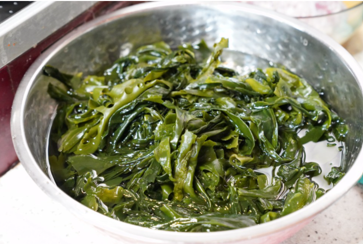
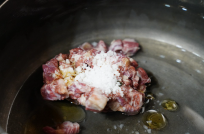
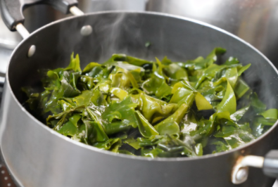

Korea Food
재료 리스트
마른 미역 2줌 | 국거리용 소고기 400g | 굵은 소금 | 참기름 1큰술 | 국간장 3큰술 | 다진 마늘 반 수저
레시피
1. 미역 손질
마른 미역은 미지근한 물에 20분간 불린 뒤 깨끗이 씻어주세요.
물기를 짠 다음 불에 담가 지액이 빠져 나올 때까지 치대 주세요.
 
2. 소고기 손질
소고기는 찬물에 1시간 정도 담가 핏물을 빼준 후 헹구어 체에 받쳐 물기를 제거해주세요
달군 팬에 참기를 두른 후 소고기와 굵은 소금, 미역을 넣고 그대로 달달 볶아주세요.
3. 끓이기
볶은 미역에 물을 넣고 바글바글 끓어오르면 다진 마늘을 넣고 45분 정도 더 끓여주세요.
다 끓어준 뒤 국간장으로 간을 맞추고 한번 더 끓여주세요.

소고기 미역국 완성!!